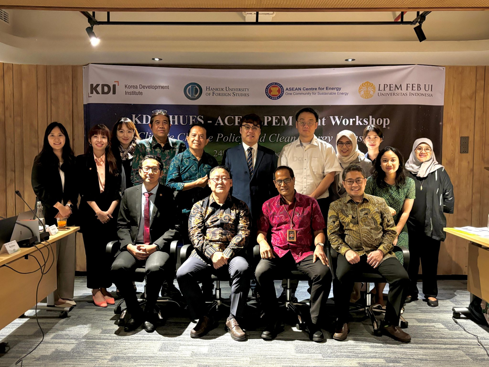
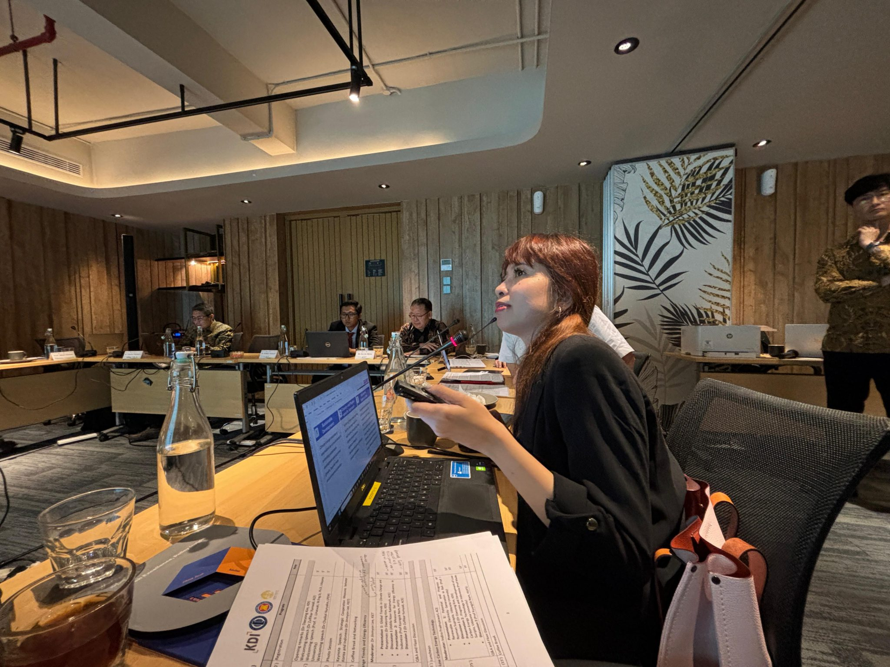
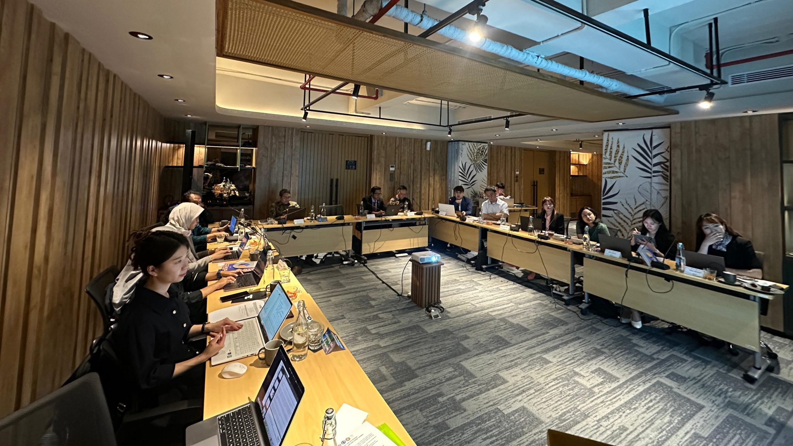

  
KERJASAMA REGIONAL
Kerja sama Regional merupakan kerja sama antara negara-negara yang terletak dalam suatu kawasan geografis tertentu yang melibatkan lebih dari 2 negara. Kerja sama ini bertujuan untuk mencapai manfaat bersama dalam berbagai bidang seperti pada bidang ekonomi, politik, sosial, budaya, dan keamanan. Dalam prosesnya, negara-negara di suatu kawasan tersebut akan saling membantu terutama jika ada suatu negara yang sedang mengalami krisis ekonomi. Kerja sama ini biasanya dilakukan dalam bentuk perjanjian atau organisasi yang mengikat hubungan antar negara-negara ini.
! ASEAN Climate Change and Energy Project (ACCEPT) !
Proyek perubahan iklim dan energi ASEAN atau ACCEPT merupakan proyek energi-iklim resmi pertama ASEAN, yang secara aktif mempromosikan pengetahuan tentang iklim di kawasan ini. ACCEPT telah menyadari pentingnya meningkatkan kolaborasi penelitian yang mendukung perubahan iklim dan transisi energi bersih di seluruh kawasan. Maka dari itu, ASEAN Centre for Energy (ACE) melalui ACCEPT menyelenggarakan lokakarya bersama dengan Korea Development Institute (KDI), Hankuk University of Foreign Studies (HUFS), dan Lembaga Penyelidikan Ekonomi dan Sosial (LPEM) Universitas Indonesia yang bertajuk “Kebijakan Perubahan Iklim dan Transisi Energi Bersih” di Bali, Indonesia, pada 24 Oktober 2024. Lokakarya ini bertujuan untuk memperkuat perspektif regional melalui kolaborasi dan membahas pentingnya kerja sama terkait perubahan iklim serta strategi potensial yang akan diterapkan di kawasan tersebut.
Dimulailah sesi pertama dengan tema “Tren Perubahan Iklim dan Efisiensi Energi”. Dr Daeyong Kim, Direktur Riset Pembangunan di Centre for International Development (CID) menekankan bahwa perlu adanya pembangunan berkelanjutan dan pertumbuhan hijau untuk bergerak maju dan pentingnya meningkatkan lebih banyak inovasi teknologi bersih. Aldilla, seorang analis riset senior ACCEPT telah mencatat bahwa emisi gas rumah kaca dapat dihindari pada tahun 2050 jika visi netralitas karbon terwujud sepenuhnya. Ia juga menyoroti pentingnya kolaborasi berbasis penelitian dalam meningkatkan pembuatan kebijakan berbasis data di tingkat nasional juga regional.
Selanjutnya Prof Kyungsik Nam dari HUFS, memberikan gambaran umum tentang “Langkah-Langkah untuk Efisiensi Energi di Indonesia”. Ia menyebutkan bahwa kebijakan efisiensi energi telah disahkan oleh negara-negara ASEAN. Dr Zulfikar juga merekomendasikan kebijakan yang mencakup optimalisasi energi, diversifikasi dan keamanan energi, dan peningkatan kolaborasi dengan pihak-pihak lain.
Beralih ke sesi dua dengan tema “Meningkatkan teknologi energi rendah karbon”. Kemudian, Prof Winaya menjelaskan secara rinci tentang pembangkitan listrik di Bali dan komitmennya tentang meningkatkan penggunaan energi terbarukan serta mengurangi gas rumah kaca sesuai dengan target Net Zero Indonesia kelak di tahun 2060. Salah satu upaya yang telah dilakukan yaitu Bali telah memasang panel surya di beberapa daerah seperti Nusa Penida dan Denpasar. Bali juga aktif dalam mengembangkan energi angin melalui proyek penelitian turbin angin yang memanfaatkan tenaga air. Prof Sucipta dari Universitas Udayana menyinggung tentang perlunya penurunan produksi minyak Indonesia yang diiringi dengan peningkatan konsumsi yang menyoroti perlunya sumber energi alternatif supaya dapat mengurangi ketergantungan kita pada bahan bakar fosil.
Sesi tiga, diskusi difokuskan pada “Kebijakan Perubahan Iklim dan Transisi Energi Bersih”. Dilanjutkan dengan presentasi Jiwon, seorang Research Associate di KDI yang menyatakan bahwa bantuan pembangunan resmi (ODA) untuk respons perubahan iklim sudah meningkat selama sepuluh tahun terakhir. Tercatat bahwa Asia telah menerima bagian terbesar karena emisi karbon yang tinggi. Jiwon juga menguraikan tantangan bagi negara-negara berkembang, salah satunya Indonesia, seperti kurangnya pembiayaan. Maka dari itu kedepannya, negara-negara berkembang harus mencari jalur yang dapat menyelaraskan pertumbuhan ekonomi, target nol bersih, dan adaptasi iklim.